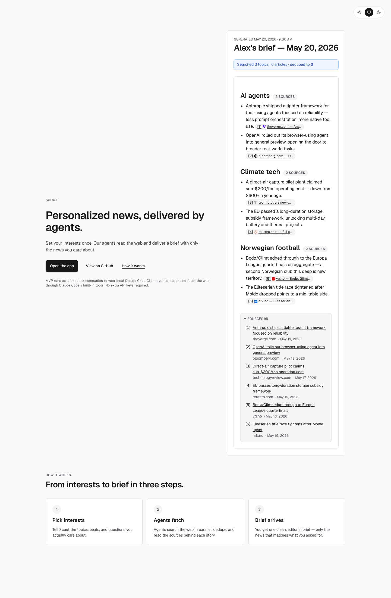
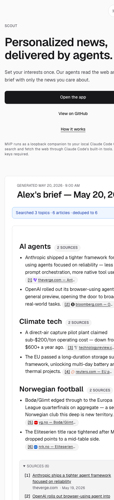
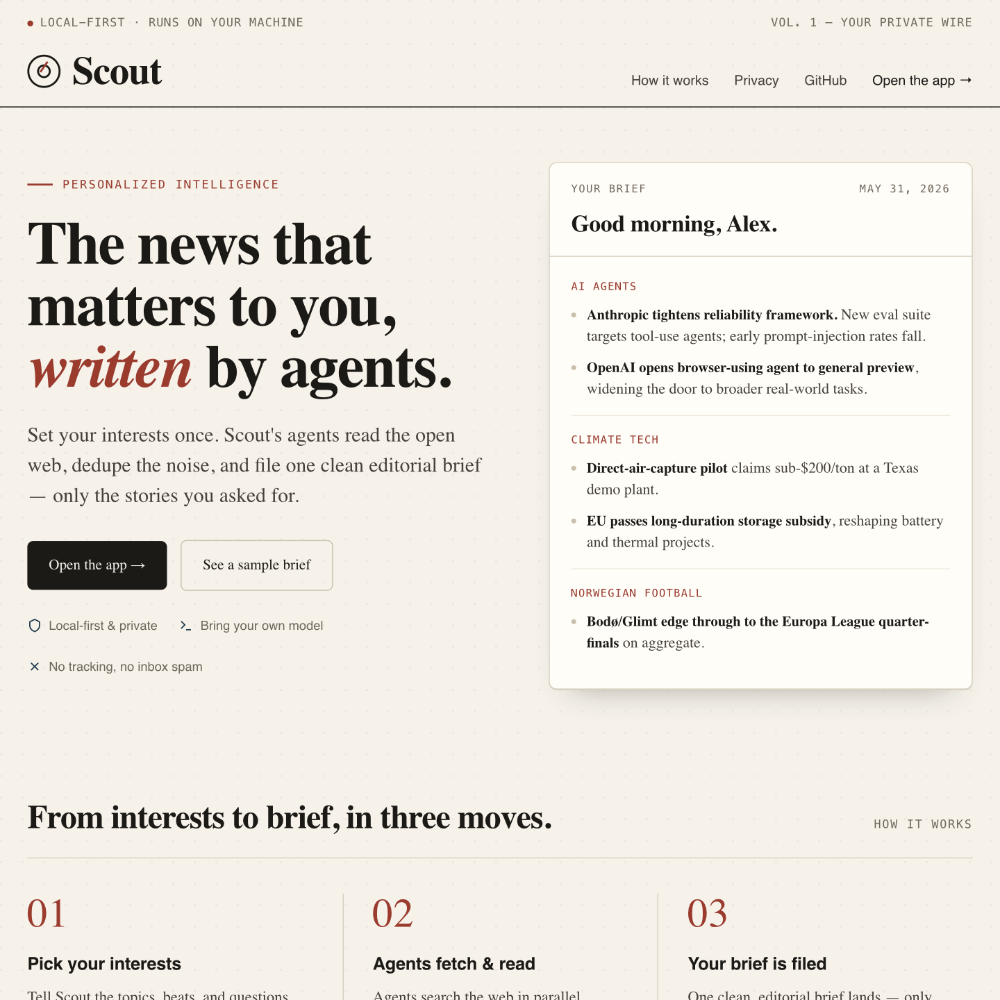
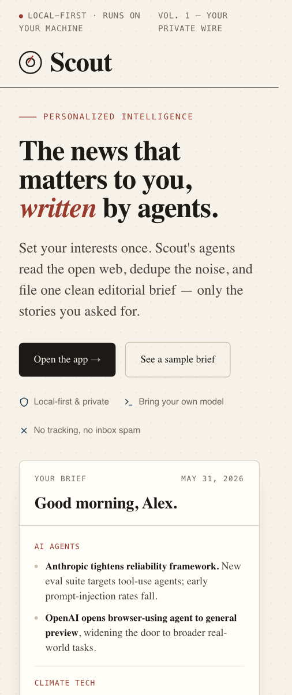
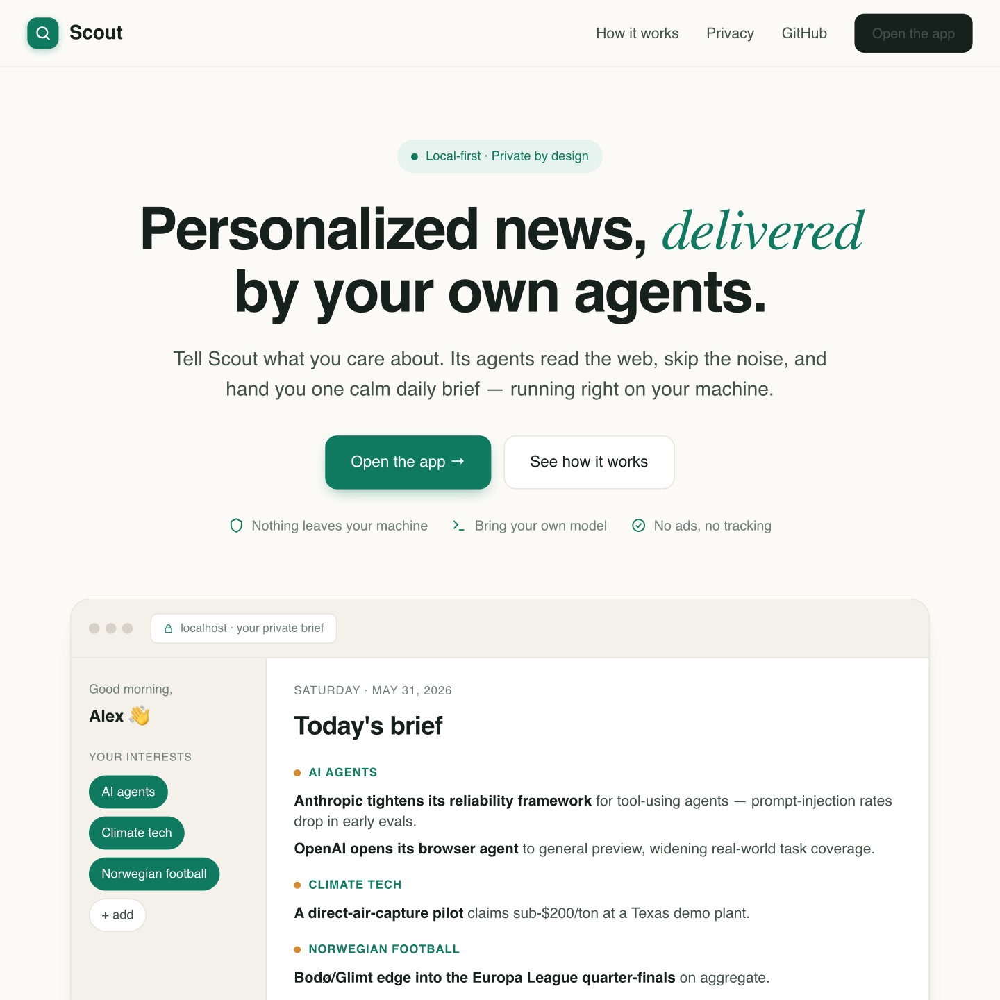
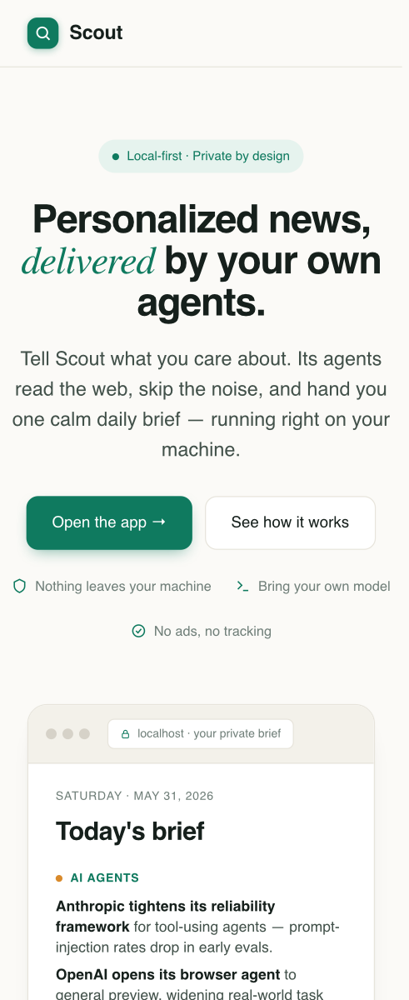
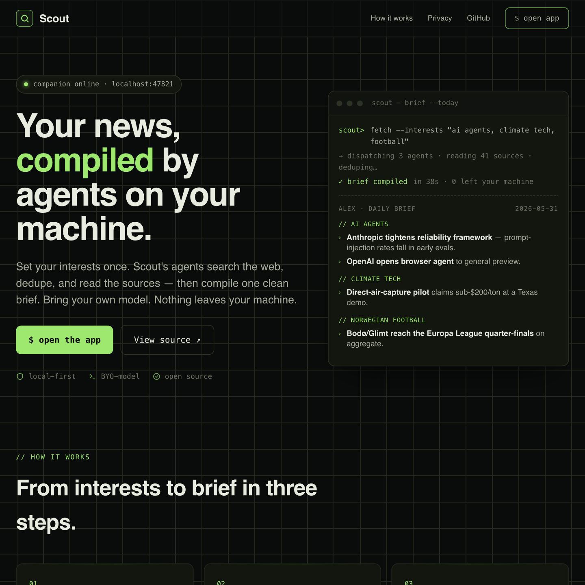
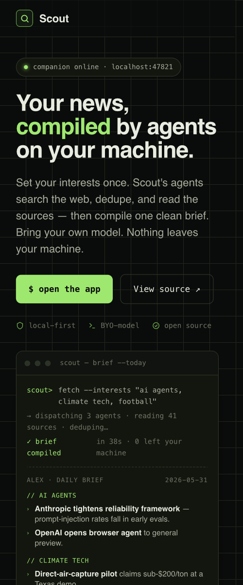

The founder asked us to rethink the entire app's visual design — landing page first. Below: an honest audit of where we are today, then the landing page reimagined in three genuinely distinct directions, each fully on-brand for a local-first, privacy-respecting, bring-your-own-model news product. Every mockup is real and rendered — open the live versions. Pick the one that resonates; that choice gates the full app rollout.
The live landing page works but reads like a developer's default: monochrome, low contrast in hierarchy, and emotionally flat for a product whose whole pitch is "a calm, personal morning brief." It doesn't earn trust or signal craft on first impression.


Same content, same core loop, three different souls. Each is a real rendered mockup — click "Open the live mockup" to interact with the full page.
A warm newspaper masthead. Treats the morning brief as what it is — editorial. Serif display (Fraunces), a reading serif for body (Newsreader), mono labels, a compass-needle wordmark, and a single signal-red accent like a dateline. Paper texture, generous rules, a closing "filed every morning" moment.


Why recommended: it's the most ownable and the most on-strategy — it makes the brief the hero and turns "local-first / private" into a feeling (your own wire service, filed for you), not a footnote. Warm, trustworthy, distinctly Scout.
Soft, modern, reassuring. Warm cream canvas, a calm teal accent, Inter + an Instrument Serif italic for warmth. Sticky blurred nav, a centered hero, and a browser device-frame showing the brief in context with privacy badges. The "Linear-clean but human" lane.


Best if the founder wants broad, friendly, mainstream appeal over distinctiveness. Safest, most familiar SaaS-modern feel.
Dark, technical, confident. For the developer/power-user heart of "BYO-model, local-first." Phosphor-green on near-black, Space Grotesk + JetBrains Mono, a live "companion online · localhost:47821" status pill, and the brief shown as a terminal session. Leans hard into the loopback-companion truth.


Strongest with a technical audience; highest personality but narrowest appeal. A dark theme also needs the most accessibility care (contrast on green-on-black was tuned to pass AA).
The landing sets the tone; these three in-app surfaces are where it has to pay off. Specific elements to improve, aligned to whichever direction is chosen (examples below describe the recommended Direction A; B/C apply the same moves in their own palette).
Full before/after mockups of these in-app screens are the immediate follow-up once a direction is locked — they inherit the chosen direction's tokens, so building them before the pick would be wasted work.